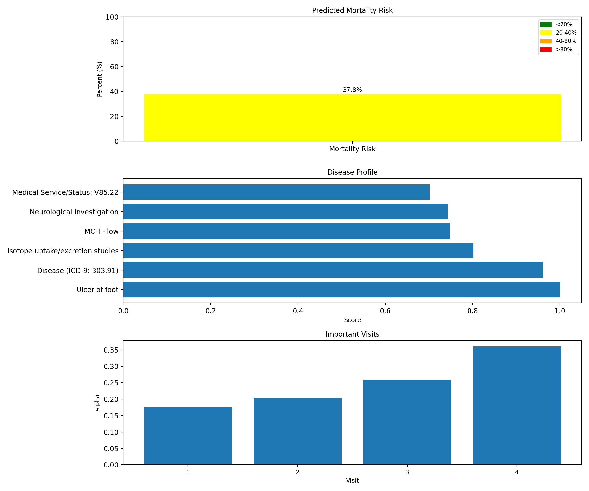
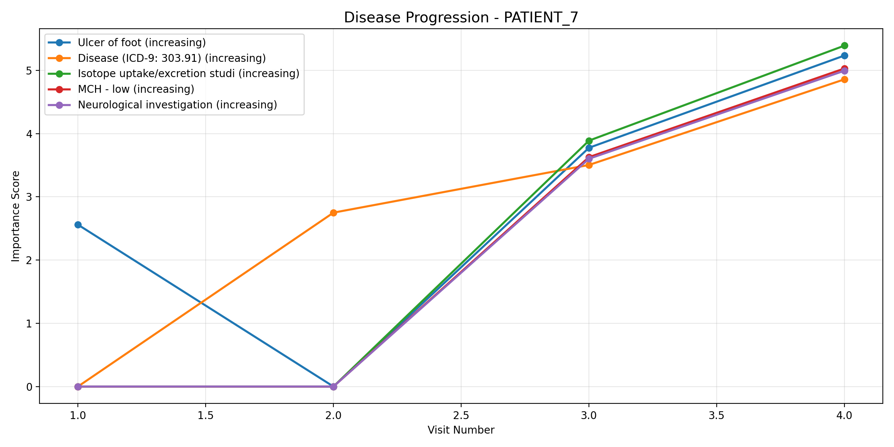

Analysis Date: 20260208_135248
Generated by Disease Interpreter v2.0
Mortality Risk: 37.76%
Category: MODERATE
Number of Visits: 4
Total Diseases: 11
Severe Conditions: 6
Chronic Conditions: 2
Clinical Insights: 2
SEVERE Score: 1.000 | Frequency: 3 visits CHRONIC
Raw Score: 11.571
Severity Level: severe
Visit Pattern: Chronic
SEVERE Score: 0.960 | Frequency: 3 visits CHRONIC
Raw Score: 11.112
Severity Level: severe
Visit Pattern: Chronic
SEVERE Score: 0.802 | Frequency: 2 visits
Raw Score: 9.280
Severity Level: severe
Visit Pattern: Acute
SEVERE Score: 0.748 | Frequency: 2 visits
Raw Score: 8.658
Severity Level: severe
Visit Pattern: Acute
SEVERE Score: 0.743 | Frequency: 2 visits
Raw Score: 8.597
Severity Level: severe
Visit Pattern: Acute


📄 Complete JSON Data | 📝 Text Report | ⚡ Clinical Insights (JSON)
All patient data is anonymized for privacy protection.